Keeping an AI engineering curriculum in sync with real-world technology change
A multi-agent system that monitors library releases and official blogs, verifies what it finds, locates the exact slides and lab cells each change affects, and recommends an evidence-backed curriculum update for an instructor to approve.
AI Trend Agent keeps an AI engineering course in step with the tools it teaches. It watches official release channels, verifies what it finds, pinpoints the slide or lab cell each change affects, and recommends a specific, cited action. An instructor approves every recommendation; the system never edits course material itself.
Libraries such as LangChain and the OpenAI SDK publish releases every few days, while course material is revised between cohorts. In the 30 days before our final capture, the watched sources produced 74 signals, including 30 stable releases. Finding by hand which of the course’s 107 files a release affects is slow and error-prone. A language model left to judge on its own gives confident answers even when a signal is fabricated, stale or irrelevant.
A deterministic clustering stage groups signals into events. Four agents then ask, in turn: is the event real, where is it taught, how much does it matter, and what should change? Models choose tool calls, search queries and wording; Python computes every score and action tier from facts the tools established. Failures are explicit, so a search that could not run is never reported as “no match”. C-Sync, the interface, shows each recommendation as a traceable story from signal to decision and records the instructor’s verdict.
On the recorded run of 21 September 2026, the 30 largest of 57 events produced 29 recommendations: 6 to update existing material, 7 to add optional content and 16 to keep watching, each with its evidence and full agent trace. In the headline case, langchain-core 1.6.4 deprecated chat message history on the day of the capture. The system confirmed the release, followed the identifier RunnableWithMessageHistory to cell 36 of the Week 3 LangChain lab, and recommended updating that cell, with a score of 4.5 out of 5.
257 offline tests (243 for the pipeline and 14 for the verifier) run with zero API calls. A golden-dataset harness scores the pipeline layer by layer. Clustering scores 100 out of 100; verification scores 56.0 offline and 60.9 ± 3.4 live, for composite scores of 75.6 and 78.3 ± 1.9. Building the harness also exposed a pairing bug that had misaligned earlier verification scores, and we fixed it.
The golden dataset is small (12 signals) and does not yet label the curriculum, evaluation and recommendation layers. The fix-drafting agent has not been exercised against a live model, and further live runs are blocked by the API project’s spend limit. Section 8 sets out the next steps.
Course material and the tools it teaches change on different schedules. This project closes the gap between them without taking the decision away from the instructor.
AI engineering is one of the fastest-moving areas of software. The frameworks taught in the WeCloudData Agentic AI Engineering program publish new versions every few days. They include LangChain, LangGraph, LangSmith, the OpenAI Python SDK, Chroma and FastAPI. In the four weeks before our final capture, four of the watched repositories published 30 stable releases (Figure 1), and three official vendor blogs published another 44 posts.
Course material changes on a slower clock. Slides and lab notebooks are written for a cohort and revised between cohorts. In the meantime, a release can deprecate an API that a lab calls, rename a module that a slide shows, or introduce a capability worth teaching. Students usually meet the problem first, as a deprecation warning or a failing cell in the middle of a lab. This is not hypothetical: our team ran into exactly this while taking the course.
Keeping a course current by hand means reading the release notes of every library it uses, deciding which changes matter, and then finding which of the 107 course files are affected. For Weeks 2 to 6, those files are 24 slide decks and 83 lab notebooks. The work is slow, easy to postpone and hard to do consistently. Automating it naively is also risky: a language model asked “does this release affect our course?” answers confidently even when the signal is fabricated, out of date or unrelated to what the course teaches.
How can an instructor learn, soon after a technology change happens, exactly which slides or lab cells it affects and what to do about it, with evidence strong enough to trust and without the system changing the course on its own?
The rest of the report is organised as follows. Section 2 presents the architecture and Section 3 the implementation of each stage. Section 4 walks through the C-Sync interface, and Section 5 reports the results of the recorded run. Section 6 describes how we evaluated the system, and Sections 7 to 9 cover lessons learned, limitations and conclusions.
A linear pipeline of deterministic stages and tool-using agents, with a human at the end of every path.
Figure 2 shows the whole system. Monitoring collects signals from GitHub releases and official blogs, and clustering, which uses no language model, groups them into events. Four agents then run in sequence: Verification (is it real?), Curriculum (where is it taught?), Evaluation (how much does it matter?) and Recommendation (what should change?). C-Sync presents each recommendation with its evidence, and an instructor approves it, requests changes or rejects it. On demand, the Instructor Companion answers questions about a recommendation and the Fix Agent drafts the change to a lab cell.
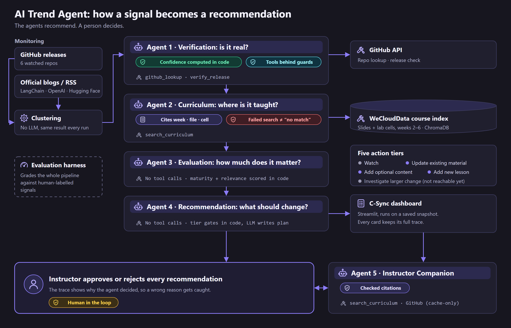
One rule divides the work throughout. Models make the judgements that need language: which tool to call next, which query to search, how to phrase a plan. Python computes every number and every decision that has consequences. Section 3 explains why.
Each stage’s output is the next stage’s input, and every contract is defined once, in 02_src/schemas.py. Renaming a field requires telling the team, because downstream code would otherwise break silently. The contracts let the four workstreams build in parallel.
| Stage | Module | Output | Key fields |
|---|---|---|---|
| Monitoring | monitoring_github.py, monitoring_rss.py | RawSignal | title, source, source tier (primary / secondary), summary, URL, published date |
| Clustering | clustering.py | TrendCluster | signals judged to report one event; independent source count |
| Agent 1: Verification | agents/verification.py | VerifiedTrend | confidence 0–1, status, evidence trail, reasoning steps, loop mode |
| Agent 2: Curriculum | agents/curriculum.py | CurriculumMatch | week, topic, file, slide or cell, similarity, exact identifier, content type |
| Agent 3: Evaluation | agents/evaluation.py | EvaluationResult | maturity 1–5, relevance 1–5, total score, rationale |
| Agent 4: Recommendation | agents/recommendation.py | Recommendation | action tier, action plan, evidence, match, total score |
| Language | Python 3.10+ |
| Language model | OpenAI gpt-4o-mini (set by OPENAI_MODEL), with function calling for every agent’s tool loop |
| Retrieval | ChromaDB with all-MiniLM-L6-v2 embeddings, plus a lexical pass fused by Reciprocal Rank Fusion |
| Document parsing | python-pptx (with speaker notes), pdfplumber (optional Tesseract OCR), notebook JSON |
| Sources | GitHub REST API (requests) and RSS/Atom feeds (feedparser) |
| Interface and quality | Streamlit (C-Sync); offline test suites, Streamlit AppTest and a custom evaluation harness |
Each stage in turn: what it does, how it decides, and the measurements that shaped it.
monitoring_github.py reads the GitHub Releases API for six repositories and drops drafts and pre-releases (tags ending in a, b or rc plus a number), because students do not install those. monitoring_rss.py reads three official blogs. Both kinds are primary sources: the project’s own announcement. Three Hacker News queries are available as secondary sources behind --secondary; they are noisy on purpose, to give the verifier something to filter out.
| Source | Type | Tier | Signals |
|---|---|---|---|
openai/openai-python | GitHub releases | primary | 10 |
langchain-ai/langsmith-sdk | GitHub releases | primary | 10 |
langchain-ai/langchain | GitHub releases | primary | 7 |
langchain-ai/langgraph | GitHub releases | primary | 3 |
chroma-core/chroma, fastapi/fastapi | GitHub releases | primary | 0 |
| Hugging Face, OpenAI and LangChain blogs | RSS | primary | 15 + 15 + 14 |
| Hacker News: langchain, AI agents, langgraph | RSS (opt-in) | secondary | not used |
| Total | 74 |
One operational lesson: the Hacker News feed provider sometimes returns malformed XML, and the fetcher then reports zero posts without an error. We therefore check the counts feed by feed after every capture, not only the total.
Clustering does two jobs. It deduplicates, because a GitHub release and the blog post announcing it are one event and should not be verified or recommended twice. It also produces the independent source count that verification confidence depends on.
It runs in two passes, with no language model, so every run gives the same result. The first pass merges signals that share a rare identifier, such as create_agent or AgentExecutor, meaning one that appears in at most 8% of signals. The second pass falls back to title similarity with a 0.75 threshold. We raised the threshold from 0.4 after measuring on 63 real signals: at 0.4, unrelated posts merged on connective words and produced false high-confidence clusters. Maintainer handles such as langchain-ai sit on a stop list. In the recorded run, 74 signals formed 57 clusters, 8 of them with two or more signals.
The model drives a genuine tool-calling loop. It reads the cluster, decides which tool to call, judges whether each observation settles the question, and decides when to stop, within a cap of six rounds. github_lookup checks that a project exists (stars, last push), and verify_release confirms that a specific version actually shipped. We do not script the order of calls.
The model never produces a number. Python computes confidence from the facts that the raw tool results established: whether a matching repository exists, whether the specific claim was confirmed, and how many independent sources were corroborated. Hard ceilings are then applied.
| Checked facts | Confidence |
|---|---|
| Two or more verified independent sources and the claim itself confirmed | 0.95 |
| Two or more verified sources, claim not confirmed | 0.80 |
One verified source and the claim confirmed (for example, a release that verify_release found) | 0.75 |
| One verified source, or a first-party post with nothing independently checkable | 0.60 |
| Something real but nothing checkable, or a single unchecked secondary source | 0.50 / 0.40 |
| The named repository was not found | 0.15 |
| Ceilings applied afterwards: fewer than 2 verified sources → at most 0.75. Named repository missing → at most 0.30. Prompt-injection markers in the signal → at most 0.10. A “latest” claim superseded by a newer release, or a publisher who is not the release author → 0.0 and status contradicted. | |
Guards protect the facts that the scorer relies on:
microsoft/markitdown first, because results are sorted by stars, and the top result was taken as confirmation.When an earlier version let the model report confidence directly, it returned 0.85 for a single-source trend and 0.85 for a two-source trend, although the rubric separated the two cases. Models compress ranges; code does not. A deterministic score is also testable offline, and a persuasive model cannot talk it upward.
Indexing. curriculum_ingest.py extracts text from slide decks (.pptx with speaker notes; .pdf with optional OCR) and from lab notebooks, cell by cell. The week comes from the folder name and the topic from the file name. Each chunk records whether it is a slide or a lab cell and has a stable ID, so re-ingestion updates chunks instead of duplicating them. The index holds 2,721 chunks from 107 files covering Weeks 2 to 6.
Hybrid search. Embeddings blur rare identifiers. On the real decks, a slide that literally contains “FAISS” scored 0.303 against a FAISS query, which is indistinguishable from unrelated noise at 0.31. Search therefore fuses semantic and lexical ranks with Reciprocal Rank Fusion (k = 60) and flags any exact identifier match. The semantic relevance floor of 0.48 was calibrated on the course decks: genuine matches scored 0.65–0.66, while unrelated text scored around 0.31.
The agent. Similarity search always returns something, so something has to judge the results. The agent writes its own queries, preferring identifiers such as RunnableWithMessageHistory to prose, and can search again within a limit of four steps. It must also decide whether a hit is actually affected. Its prompt defines impact strictly: a trend affects an item only when it makes the material incorrect, outdated, incompatible, misleading or broken, and shared vocabulary does not count. It checks labs as well as slides, because a notebook cell that calls a deprecated API stops running.
Searched: the agent looked, and its reason says what it found. Search failed: it tried, but the search could not run, which is not a finding of “no match”. Skipped: verification confidence was below 0.4, so no search was attempted. Collapsing these states was the most serious bug we found (Section 7).
Python computes two scores from values the pipeline already trusts, and the model only explains them in plain language. If the model’s reply states or argues for a number, it is rejected, and a template built from the same facts is used instead. The rationale therefore cannot contradict the score.
| Score | Question | Rule |
|---|---|---|
| Maturity 1–5 | Is this real and established? | From verification confidence: ≥ 0.85 → 5; ≥ 0.70 → 4; ≥ 0.50 → 3; ≥ 0.30 → 2; otherwise 1. |
| Relevance 1–5 | How directly does it hit what we teach? | Exact identifier match → 5. Slides: similarity ≥ 0.65 → 5, ≥ 0.55 → 4, ≥ 0.48 → 3. Labs: ≥ 0.55 → 5, ≥ 0.45 → 4. A weak match floors at 2; no match at all → 1. |
Labs get the lower thresholds on purpose, because a broken lab cell is more urgent than an outdated concept slide. “No match” (1) is kept separate from “weak match” (2), because the recommendation stage treats the absence of coverage as a distinct state.
Python picks the tier, because a curriculum lead acts on it, so it must be reproducible and testable. The first rule that applies wins:
| # | Condition | Tier |
|---|---|---|
| 1 | Maturity below 4: not established enough to act on | Keep watching |
| 2 | A curriculum match exists and relevance ≥ 4 | Update existing material |
| 3 | A match exists with lower relevance | Add optional content |
| 4 | No match, and the curriculum was never checked (skipped or failed) | Keep watching |
| 5 | No match, but the trend is a version bump (e.g. v3.9.0, ==1.6.2) | Keep watching |
| 6 | No match, and the title names nothing the course could teach | Keep watching |
| 7 | Verified, in scope and genuinely uncovered | Create a new lesson |
The model writes the plan (at most five steps and 1,500 characters), and the plan is then checked against the tier. A plan whose wording argues for a different tier, such as “new lesson” under keep watching, is rejected, and so is one that contains instruction-override phrases. This stops a prompt-injected recommendation from slipping through in the prose even when the tier itself is safe. Releases that cite the same lab cell are collapsed into one recommendation. The fifth tier, investigate larger change, is deliberately unreachable: an evaluation carries a single match, so there is no multi-module signal to base it on, and inventing one would be fabrication.
A conversational layer over one recorded recommendation. The companion answers questions such as “why this tier?” or “which lab cell is hit?” from the record and its trace. It explains the decision and never recomputes or overrules it. Follow-up lookups use the local course index and cached GitHub responses only, so they never make a live GitHub request. Answers cite typed labels: [R] record, [E] evidence, [M] match, [C] curriculum searches, [V] verification steps and [T] chat lookups. A checker flags invented labels and claims that contradict the trace.
For an update existing material recommendation, the Fix Agent drafts the change itself. It retrieves the full lab cell from the index, together with the release evidence, and proposes a before-and-after version of the cell. It may change only what the evidence supports, must keep the lab’s # YOUR CODE HERE placeholders, and must list anything the evidence does not settle. Code then flags every identifier in the draft that appears in neither the cell nor the evidence. The draft is labelled not applied and is never written anywhere.
The live pipeline is measurably non-deterministic: across three live runs over the same 10 signals, 5 of the 10 changed tier at least once. We document that variance and demonstrate from a frozen run instead. demo_snapshot.py --capture runs the pipeline once and saves every recommendation with its agent trace. C-Sync and --replay read that file with zero API calls. A trace records every verification step (the thought, the tool and the observed result), every curriculum query, and whether the curriculum was searched, failed or skipped. Successful GitHub responses are cached on disk, and TOOL_CACHE_ONLY=1 runs the tools without touching the network.
A story-led Streamlit interface that follows one recorded trend from signal to decision, in the order a reviewer needs to see it.
C-Sync reads the recorded run and never re-runs an agent, so every page agrees with every other. Only two actions can call a model, and both need an explicit click: asking the companion a question, and pressing Draft the fix. The left panel lists all nine pages. The top bar holds the five pipeline stages, 01 Discover to 05 Decide, and each stage opens its page. The interface builds on the team’s SkillRadar UI prototype.
All screenshots were captured from the recorded run of 21 September 2026 (01_data/demo_snapshot.json) with the featured trend, langchain-core 1.6.4, selected. No review decisions had been recorded at capture time.
The Home page opens with the big picture. Each square is one stage of the run, and its area is proportional to the real count at that stage, so the reader sees how much noise the pipeline removes before it recommends anything. A featured trend invites the reader to follow one decision from beginning to end.
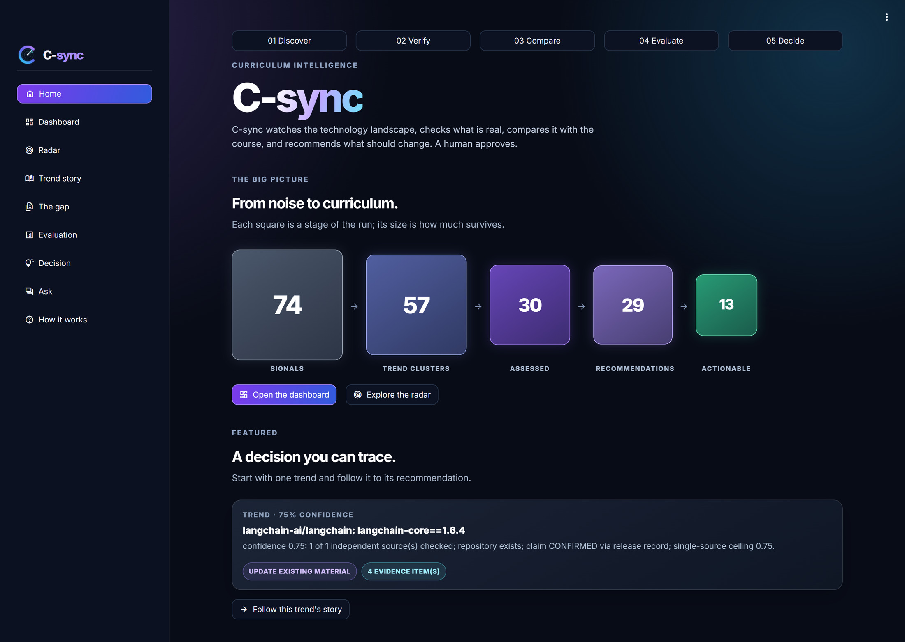
The Dashboard lists every recommendation, most urgent tier first. It can be filtered by action tier, by the kind of material cited (lab or slides) and by “actionable only”. Each card shows the score, the confidence, the exact course citation and the instructor’s review status. The action plan sits behind a “Full plan” expander, so that the list stays easy to scan.
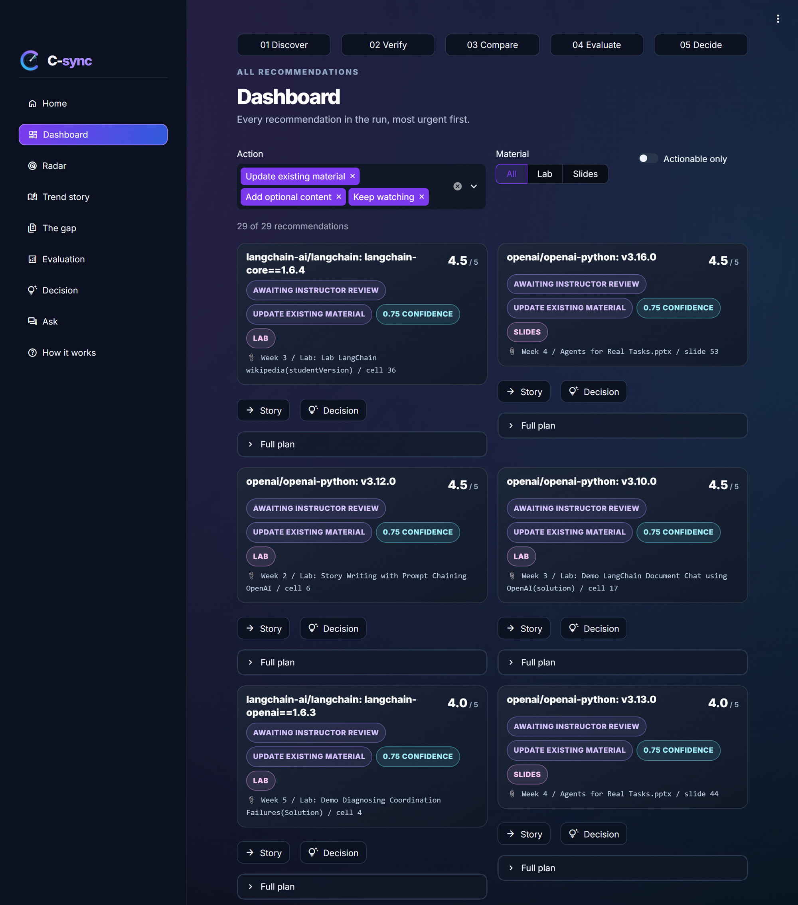
The Radar (01 Discover) shows each assessed trend as a light on a sweeping scanner. Colour encodes the recommended action, size the maturity score and glow the verification confidence. Clicking a light opens that trend’s story without reloading the app.
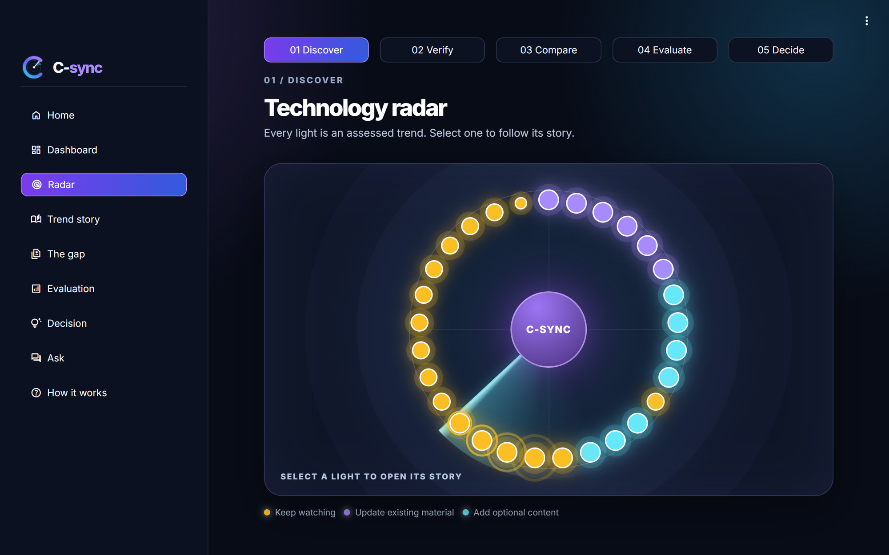
verify_release confirmed the release, and a failed curriculum search is shown as failed.The Trend story (02 Verify, Figure 6) answers “why is this trending, and why should we trust it?”. It shows the original signal, including its release notes, then the evidence the Verification Agent recorded, one card at a time.
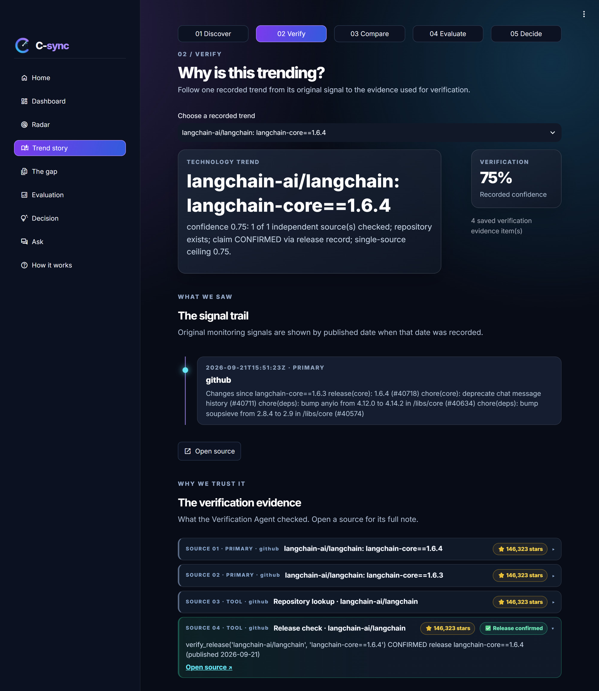
The gap (03 Compare) places the trend beside the course material that the Curriculum Agent matched. The verdict is phrased with care. “Related material found” needs a citation, and “Curriculum gap identified” appears only when the agent actually proposed a new lesson. Otherwise the page says “Coverage not established”, because a missing match alone does not prove a gap.
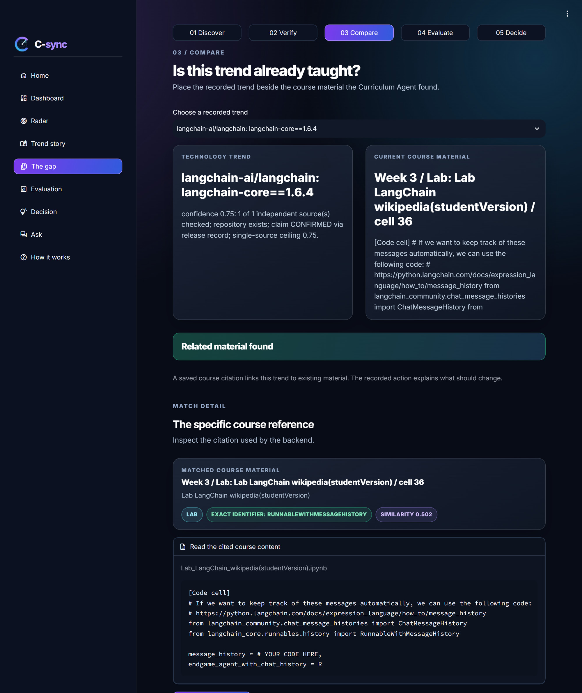
RunnableWithMessageHistory, and the cell’s code, which imports ChatMessageHistory, is open for inspection.Evaluation (04 Evaluate) keeps the focus on the evidence until the reader asks for the numbers. When Reveal the scores is pressed, three rings show maturity, relevance and the overall score, and a caption explains how each was derived from the stored run.
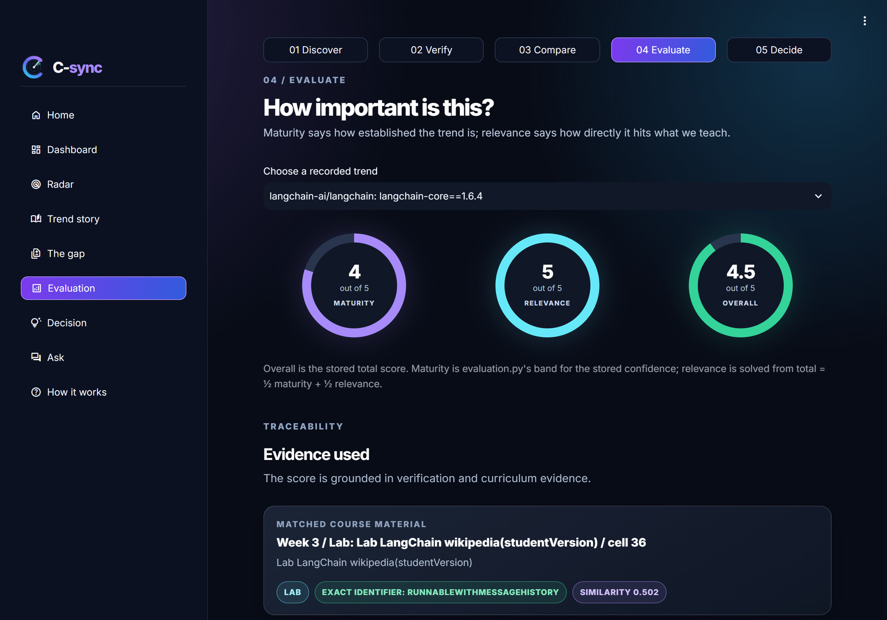
The Decision page (05 Decide) is where the system hands over to a person. It shows the recommended action with its verification note, review status and cited course area, then the plan the Recommendation Agent wrote (Figure 9). Below the plan, The proposed fix drafts a before-and-after version of the lab cell. The Fix Agent runs only when the instructor presses Draft the fix, and the draft is never applied.
Your decision (Figure 10) records the verdict (Approve, Request changes or Reject) with an optional note, and can attach the drafted fix. The verdict then appears as a status pill on the Decision header and on the Dashboard card. A collapsible evidence chain shows the path from trend to evidence, curriculum, evaluation and decision on one line.
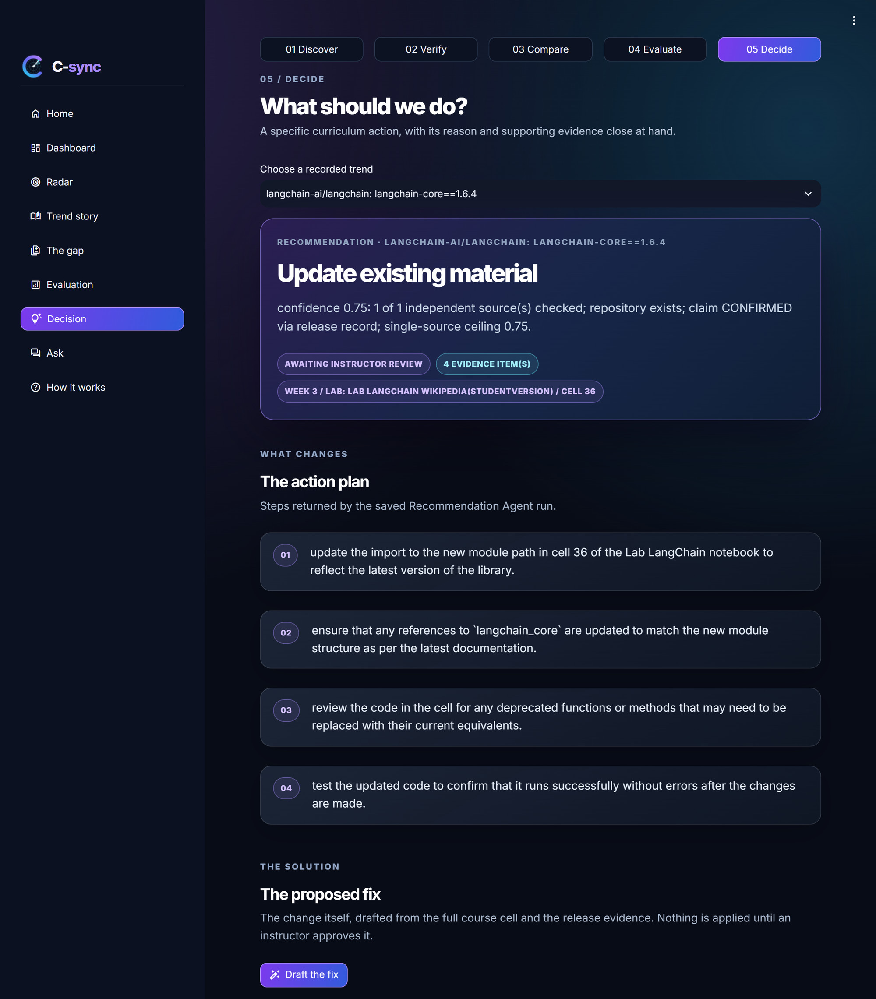
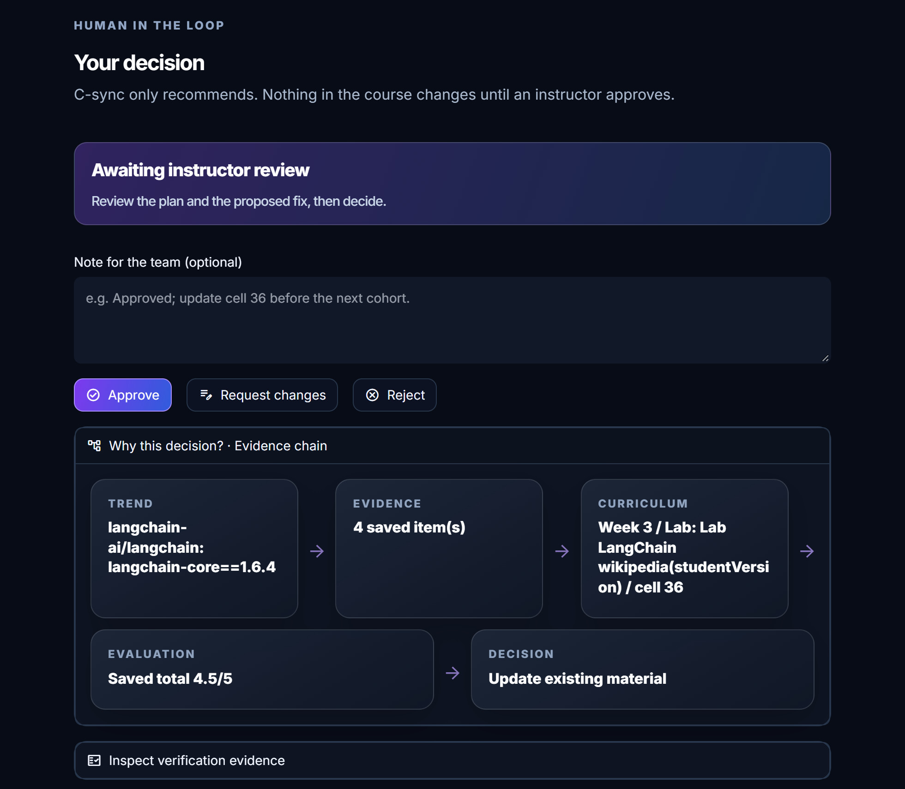
The Ask page puts the Instructor Companion in front of one recommendation. Pills show the tier and the curriculum outcome (searched, search failed, skipped or no trace), so the three states are never blurred. Suggested questions help an instructor start. Without an API key, the page restates what the run recorded instead of answering.
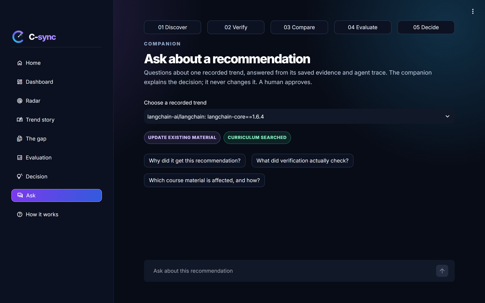
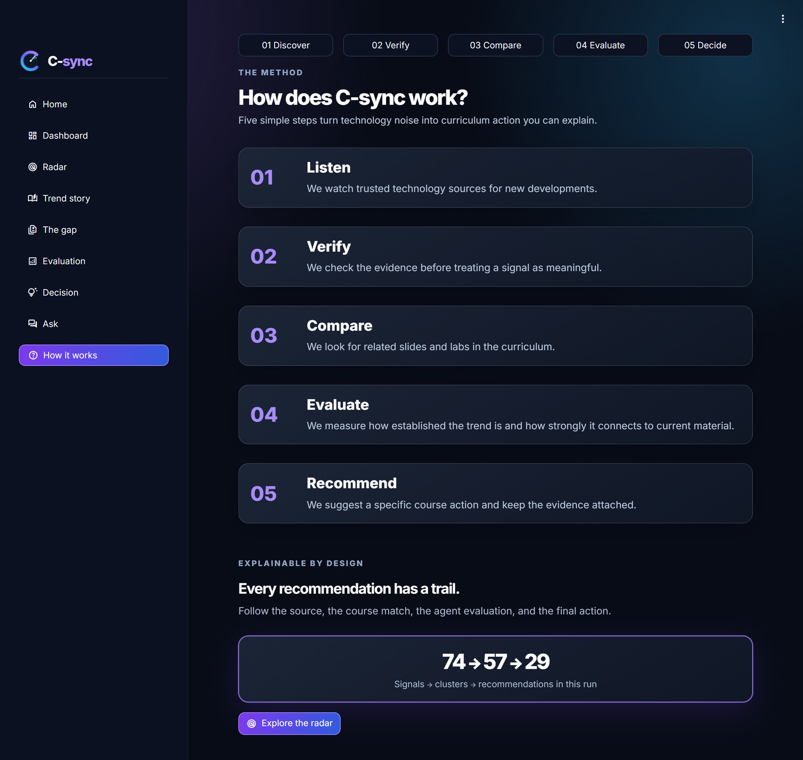
What the system produced on real data: a 30-day capture of the course’s own toolchain, recorded on 21 September 2026.
The capture fetched 30 days of primary-source signals: 74 signals, which clustering reduced to 57 events. The pipeline assessed the 30 largest clusters and collapsed one pair that cited the same material, leaving 29 recommendations. Every recommendation carries a trace. The Verification Agent ran in agentic mode on all 29. The curriculum was searched for 28 trends and skipped once, below the confidence gate, and not a single search failed.
| Release | Cited course material | Matched by | Score |
|---|---|---|---|
langchain-core==1.6.4 | Week 3 / Lab: Lab LangChain wikipedia (studentVersion) / cell 36 | identifier RunnableWithMessageHistory | 4.5 |
openai-python v3.16.0 | Week 4 / Agents for Real Tasks / slide 53 | identifier MCP | 4.5 |
openai-python v3.12.0 | Week 2 / Lab: Story Writing with Prompt Chaining (OpenAI) / cell 6 | similarity 0.685 | 4.5 |
openai-python v3.10.0 | Week 3 / Lab: Demo LangChain Document Chat using OpenAI (solution) / cell 17 | similarity 0.734 | 4.5 |
langchain-openai==1.6.3 | Week 5 / Lab: Demo Diagnosing Coordination Failures (solution) / cell 4 | similarity 0.595 | 4.0 |
openai-python v3.13.0 | Week 4 / Agents for Real Tasks / slide 44 | similarity 0.639 | 4.0 |
The headline recommendation shows every stage at work on the kind of change that motivated the project: a release that deprecates an API used by a student lab.
langchain-ai/langchain: langchain-core==1.6.4. The release notes list “chore(core): deprecate chat message history (#40711)”.
github_lookup matched langchain-ai/langchain (146,323 stars), and verify_release confirmed the release, published 21 Sep and not a pre-release. Confidence is 0.75: one independent source with its claim confirmed, at the single-source ceiling.
“chat message history” ranked Week 3 lab cell 36 first (0.585). A follow-up query for RunnableWithMessageHistory found that identifier verbatim in three cells. The agent’s reason: the lab teaches RunnableWithMessageHistory and ChatMessageHistory, which the deprecation makes potentially outdated.
Maturity 4 (confidence ≥ 0.70) and relevance 5 (exact identifier in a lab cell) give 4.5 / 5.
Update existing material: a match is present and relevance is at least 4. The plan: update the imports in cell 36, align references to langchain_core with the current documentation, replace deprecated calls, and re-run the cell.
Shown in C-Sync as awaiting instructor review. The instructor can draft the fix, then approve it, request changes or reject it.
Figures 6 to 8 show this same trace in C-Sync. Because the evidence and the reasoning travel with the recommendation, a reviewer can check each step instead of trusting the conclusion.
Three tiers of evidence: deterministic tests on every change, a human-labelled golden dataset scored layer by layer, and behavioural cases aimed at failures we actually observed.
Offline test suites exercise the deterministic logic with zero API calls. A golden dataset of human-labelled signals, including fabricated claims, is scored layer by layer, with repeated runs to average out model non-determinism. Behavioural test cases target specific observed failures. We wrote twelve such cases for promptfoo but could not run them, because the tool needs Node 22.22 or later (Section 8).
test_chain.py blanks the API key when it is imported, so a real key in .env is never used. It runs 243 checks, all passing. test_verification.py adds 14 passing tests of the verifier’s tool loop. Both suites run before every merge.
test_chain.py)| Area | Guarantees tested |
|---|---|
| Verification (sections 1, 2, 10, 13) | Scoring bands and ceilings; repository matching; injection, staleness and publisher gates; the restored deterministic verifier and its four real-data fixes |
| Evaluation and recommendation (3, 4, 12) | Score mapping; every tier rule; a fallback verdict can never be acted on |
| Retrieval and tools (6, 7) | The FAISS case (an exact identifier beats similarity); tools report errors as data and never raise into the loop |
| Safety (5) | Prompt-injection markers in titles, summaries and slide text |
| Failure states (9, 11) | A curriculum search failure driven through the real agent loop, and end to end through capture() |
| Observability (8, 14) | Agent traces are recorded, and their plain-language display keeps searched, failed and skipped apart |
| Interface (16) | Every C-Sync page is smoke-run with Streamlit AppTest; only the Ask page and the fix panel may import an agent |
| Companion, fix and review (17, 18) | Citation checks, offline and error modes, placeholder preservation, flagging of new names, persistence of review decisions |
The golden dataset holds 12 signals labelled by hand: 10 genuine and 2 fabricated. Each label records whether the claim is genuine, the confidence verification should assign, whether the signal presents stale news as new, a priority rank, the expected maturity and relevance, and the expected action tier. The labelling guide asks reviewers to leave a field empty rather than guess, because a guessed label silently invalidates the score. run_eval.py scores five layers, and compare.py refuses to compare runs that used different datasets (by SHA-256 hash) or different models.
| Layer | Metrics | Weight | Status |
|---|---|---|---|
| Clustering | Contamination rate; cluster count against the expected count | 0.20 | Scored |
| Verification | Truth–confidence gap (genuine minus fabricated); confidence MAE; stale-flag rate | 0.25 | Scored stale flag needs a new output field |
| Curriculum | Precision@3; recall; correct abstention | 0.15 | Null needs event-level citation labels |
| Evaluation | Spearman rank correlation; maturity and relevance MAE | 0.20 | Null needs event-level labels |
| Recommendation | Exact tier accuracy; off-by-one accuracy; over-recommendation rate | 0.20 | Null needs event-level tier labels |
A layer whose labels or outputs are missing scores null, never zero, and the composite renormalises its weights over the available layers. On the current dataset the composite is therefore a weighted mean of clustering and verification. The verification score is the mean of the truth–confidence gap × 100 and (1 − MAE) × 100. Each run records the commit, dataset hash, model, token usage and the mean ± standard deviation over its repeats.
We scored four configurations of the verifier on the same dataset (SHA-256 eb13e5ada377…). The three offline runs used cached tool responses and no model (TOOL_CACHE_ONLY=1). The live run used gpt-4o-mini-2024-07-18 with three repeats. Clustering scored 100 in every run: zero contamination, and 11 clusters against the 11 expected.
| Verifier configuration | Mode | Verification | Gap | MAE | Composite |
|---|---|---|---|---|---|
| Pre-restore, source-tier fallback 3f5c2a7 | offline | 65.42 | 0.450 | 0.142 | 80.79 |
| Restored deterministic verifier, before fixes 7d435e8 | offline | 33.71 | −0.005 | 0.321 | 63.17 |
| Restored verifier + 4 real-data fixes c4c9355 | offline | 56.04 | 0.275 | 0.154 | 75.58 |
| Restored verifier + fixes, live model 156d86f | live ×3 | 60.90 ± 3.44 | 0.358 | 0.140 | 78.28 ± 1.91 |
The four fixes came from running the restored verifier on real data. Monorepo tags such as langchain==1.4.0 are confirmed verbatim. A bare-name “not found” counts only against claims that rest on secondary sources alone, and a bare-name match never confirms such a claim, because of name-squatting repositories. A first-party post with nothing checkable scores 0.60, below the action floor. Together, the fixes raised the verification score from 33.7 to 56.0 offline. The live run, in which the model chooses the tool calls, scored 60.9 ± 3.4 and used about 245,000 tokens over its three repeats.
In this 12-item set, every fabricated item is a secondary source and every genuine item a primary one, so a rule that looks only at source tier separates them by construction. The pre-restore verifier’s higher score reflects that shortcut, not better verification. The restored verifier scores only what its tools confirmed, which is the behaviour we want on real data, where source tier and truth do not line up so neatly. The dataset needs harder cases before verification scores can be compared with confidence.
The harness itself had a bug, and finding it changed our numbers. run_eval.py used to pair trends with labels using zip(trends, entries), that is, one trend per cluster against one label per signal. The default set has 11 clusters and 12 signals, so after the first merged cluster every trend was scored against the next signal’s label. Each signal is now matched to the cluster that contains it. Every verification score produced before the fix, including figures we had previously reported, was misaligned and has been retired. A second fix made the dataset hash independent of line endings, so a Windows checkout of the same labels no longer looks like a different dataset to compare.py. The lesson: evaluation code deserves the same scrutiny as the code it evaluates.
Most of the design in Section 3 exists because something went wrong on real data first. These are the failures that taught us the most.
The Curriculum Agent returned nothing both when it searched and found no match and when the search itself failed. During one live run the API spend limit was hit (HTTP 429). Every search failed silently, and three trends received confident create a new lesson recommendations claiming “no existing coverage found”, although no search had run. Fix: a search_failed state with a reason on every failure path; a rule that keeps unchecked trends at keep watching; and a banner stating that a failed search is not a finding of “no match”. The fix is verified offline end to end, and the re-run at scale is waiting for API quota.
Model-reported confidence did not separate one source from two, so all scoring moved into code (Section 3.3). A version-control lesson came with it: the deterministic verifier had never been committed, so for a while the model set confidence. We restored it from the team’s reference copy and re-scored it (Table 10).
Clustering by title alone produced spurious cross-source merges that looked like corroborated, high-confidence events. An identifier-first pass with a strict 0.75 title fallback fixed this (Section 3.2).
In one live batch, nine of ten trends became new-lesson recommendations. They included independent journalism in Ukraine and the Navier–Stokes Millennium Prize problem: all verified, all uncovered, none in scope. An in-domain gate now requires a positive technical signal in the title, because vendor names appear in the body of every post a vendor publishes.
openai-python v3.7.0 to v3.10.0 each proposed a new lesson introducing the OpenAI Python library, which the course already teaches in several labs. A release that matches nothing now stays at keep watching.
A GitHub search for “langchain” returned microsoft/markitdown first, because results are sorted by stars, and the top result was taken as confirmation. The model also invented openai/openai while checking a genuine post. Lookups are now matched against the repository a signal names, and only a named repository can be reported as missing.
“Announcing LangGraph v0.1” matched a cell that already used the new API, where the old name appeared only in a comment. “An Alien Mind” matched an AI-ethics slide through the word “alignment”, but the essay argued policy while the slide taught technique. Exact matching cannot tell code from commentary about code. That is why a human approves every recommendation, and why labelled positive cases are scarce.
The same 10 signals changed tier on 5 of 10 across three live runs. We capture a run once, replay it deterministically and document the variance, rather than demonstrating live and hoping.
What the current system cannot yet claim, and the work that would change that.
create_react_agent → create_agent), but it lacks the fields that the clustering metrics need. The curriculum, evaluation and recommendation layers score null until the labels are event-level.VerifiedTrend, and precision@3 needs the Curriculum Agent to expose its top three candidates rather than only its final choice.AI Trend Agent shows that an agentic system can keep a fast-moving course current without asking anyone to trust a black box.
We set out to tell an instructor, soon after a change happens, exactly which slides or lab cells it affects and what to do about it, with evidence strong enough to trust. On a real 30-day capture of the course’s own toolchain, the system reduced 74 signals to 29 evidence-backed recommendations. It pinpointed 13 actionable changes to specific slides and lab cells, including the deprecation that motivated the project, which it traced from a GitHub release to cell 36 of the Week 3 LangChain lab.
The most important decisions were about where to use a language model. Models choose tool calls, write queries and explain decisions; code computes confidence, scores and tiers from facts the tools established. Failures are explicit states rather than silent defaults, every recommendation carries its trace, and an instructor makes the final call. Each of these rules exists because we saw what happened without it on real data.
The evaluation is honest about its reach. The deterministic core is well tested, with 257 offline tests. The golden dataset scores clustering and verification, but it needs event-level labels and harder cases before it can grade the later stages. With those labels, a Content-Type Agent and scheduled runs, C-Sync could move from a recorded demonstration to a tool that instructors use every week.
The agent recommends. A human decides. Every recommendation shows its work.
| Name | Role |
|---|---|
| Abdurahman Al-Duraywish | Team Lead · integration: end-to-end pipeline, C-sync interface, Docker |
| Rafif Alsuhaibani | Verification agent and its tests · gold-dataset evaluation |
| Aldanah Aldosari | Evaluation agent · SkillRadar UI, the base of C-sync |
| Ruyuf Almajnooni | Data ingestion · curriculum retrieval (hybrid RAG search) and the curriculum agent |
The work was organised into four workstreams: Data & Ingestion, Agents & Tools, Platform & Security, and Evaluation & QA. Capstone project for the SDA × WeCloudData Agentic AI Engineering Program. Repository: github.com/DHM22/AI-Trend-Agent, branch feature/ai-trend-agent.
Python 3.10+, pip install -r requirements.txt, and copy .env.example to .env. OPENAI_API_KEY is needed only for live agent runs; GITHUB_TOKEN raises the GitHub rate limit. On Windows, set PYTHONIOENCODING=utf-8 before printing feed titles.
# the interface: replays the recorded run, no API calls except Ask and "Draft the fix" python -m streamlit run c_sync/app.py # offline checks (0 API calls); run both before merging python 02_src/agents/test_chain.py python 02_src/tests/test_verification.py # replay or capture a run python 02_src/demo_snapshot.py --replay python 02_src/demo_snapshot.py --capture --snapshot 01_data/experiment.json --limit 2 # build the course index, then query it python 02_src/curriculum_ingest.py --curriculum 01_data/curriculum --db ./vectorstore python 02_src/curriculum_ingest.py --db ./vectorstore --query "chunking" --week 2 # monitoring and clustering python 02_src/monitoring_github.py --days 30 python 02_src/monitoring_rss.py --days 30 [--secondary] python 02_src/clustering.py --signals 01_data/signals.json --check # evaluation python 04_eval/run_eval.py --repeats 3 --out 04_eval/results/<name>.json python 04_eval/compare.py <baseline.json> <after.json>
01_data/ curriculum (Weeks 2–6, not in Git), signals*.json, demo_snapshot.json
02_src/ schemas, monitoring, clustering, curriculum_ingest, demo_snapshot
02_src/agents/ verification, curriculum, evaluation, recommendation,
companion, fix, tools, test_chain.py
02_src/tests/ test_verification.py
03_assets/ architecture diagram, logo, screenshots, presentation, this report
04_eval/ golden datasets, run_eval.py, compare.py, saved results
c_sync/ C-Sync, the Streamlit interface (app.py, ui_*.py)
vectorstore/ local Chroma index, regenerated by curriculum_ingest.py
| Signal | One item from a monitored source: a GitHub release or a blog post (RawSignal). |
| Primary / secondary source | Primary: the project’s own words (release, official blog). Secondary: someone reporting on it (forum, news). |
| Cluster (event) | Signals judged to report the same underlying event; its distinct sources count as independent. |
| Confidence | Verification’s 0–1 belief that the event is real, computed in code from checked facts. |
| Maturity / relevance | 1–5 scores: how established the trend is, and how directly it hits what the course teaches. |
| Action tiers | Keep watching, add optional content, update existing material, create a new lesson and investigate larger change (not reachable by design). |
| Exact identifier match | A code identifier from the trend (e.g. RunnableWithMessageHistory) found verbatim in a slide or cell. |
| Trace | The recorded reasoning behind a recommendation: verification steps and tool results, curriculum queries and outcome. |
| Snapshot | A captured pipeline run saved to JSON and replayed by C-Sync with zero API calls. |
| Search failed | A curriculum search that was attempted but could not run. Never equivalent to “no match”. |
| Human in the loop | Every recommendation waits for an instructor’s decision: approve, request changes or reject. |